NumPDENumerical Method for Partial Differential Equation
professor : Ralf Hiptmair
author: walkerchi
Basic Mathematic
Theorem
- Gauss’s Theorem : ∫Ωdiv j dx=∫∂Ωj⋅n dS(x)
- Green’s first formula : ∫Ωj⋅ v dx=−∫Ω∇⋅ j v dx+∫∂Ωj⋅n v dS
- General product rule : div(j v)=v divj+j⋅∇v
Notation
- n:∂Ω→Rd exterior unit normal vector field on ∂Ω
- j∈Rd : flux vector, e.g. velocity field
- Ω : interior domain
- ∂Ω : domain boundary
Definition
- inf{x}∈Rd : infinite set , the lower bound
- sup{x}∈Rd : super set, the upper bound
Sobolev Space & Norm
-
L2 norm : ∥v∥L2=∫Ω∥v(x)∥2dx
- Cpw0(Ω)⊂L2(Ω)
-
H1(Ω) seminorm : ∣v∣H1=∫Ω∥∇v∥2dx=∥∇v∥L2
- H01(Ω) denotes the boundary ∂Ω is 0
- Cpw0(Ω)⊂H1(Ω)Cpw1(Ω)⊂H1(Ω)
-
H1(Ω) norm : ∥v∥H1=∥v∥L22+∣v∣H12
- Multiplicative trace inequality : ∥u∥L2(∂Ω)2≤C∥u∥L2(Ω)⋅∥u∥H1(Ω)∃C=C(Ω)>0
-
Hm(Ω) norm : ∥v∥Hm=α∈Nd,∣α∣=m∑∫Ω∣Dαu∣2dx
-
∥⋅∥a energy norm : ∥v∥a=a(v,v)
Boundary
- Dirichelet boundary (essential boundary) : u=gu∈∂Ω
- Neumann boundary (natural boundary) : ∂n∂u=j⋅n=−hu∈∂Ω
- compatibility condition : −∫∂Ωh dS=∫Ωfdx for the existence of Neumann problem
- variational form example : ∫Ωκ(x)∇u⋅∇v dx+∫∂ΩΨ(u) v dS=∫Ωfv dxu∈H1(Ω)∀v∈H1(Ω)
- Radiation boundary : ∂n∂u=Ψ(u)u∈∂Ω
Notation
- n:∂Ω→Rd exterior unit normal vector field on ∂Ω
- j∈Rd : flux vector, e.g. velocity field
- Ω : interior domain
- ∂Ω : domain boundary
- Minimization problem : $u = \underset{v}{\text{argmin}}~J(v) =\underset{v}{\text{argmin}}~\frac{1}{2}\text{a}(v,v) - \ell(v) =\underset{v}{\text{argmin}}~\frac{1}{2}\Vert v\Vert_\text{a} - \ell(v) $
- LVP (Generalized) Linear variational problem : a(u,v)=ℓ(v)u∈V^0∀v∈V0, V^0 is the trial space, V0 is the test space
- BVP Boundary value problem
- DVP Discrete variational problem : a(uh,vh)=ℓ(vh)uh∈V0,h∀vh∈V0,h where u is test space, v is trial space
- IVP Initial boundary problem : y˙=f(t,y)y(t0)=y0
- Strong form : a partial differential equation (PDE)
- example : −∇2u=f
- Weak form : add test space and integrate in domain to the strong form
- example : −∇2u=f→∫Ω∇u⋅∇v dx−∫∂Ω∇u⋅n v dS=∫Ωf v dx
FEM Finite Element Method
Galerkin Discretization
a(uh,vh)=ℓ(vh)⇔Aμ=ϕ
Notation
- A Galerkin matrix (stiffness matrix) : A=[a(bhk,bhj)]j,k=1N∈RN×N
- A is symmetric and positive definite
- ϕ : Right hand side vector (load vector) : ϕ=[ℓ(bhj)]j=1N∈RN
- μ : Coefficient vector : μ=[μ1,⋯,μh]⊤∈RN, uh=∑k=1Nμkbhk where bhk∈B is basis function
Basis Function
-
degree of freedom : basis function bhk∈Bh
-
change of basis : Bh~=SBh→A~=SAS⊤ϕ~=Sϕμ~=S−Tμ
-
support : $\text{supp}(f) = {x\in\Omega,f(x)\neq 0} $
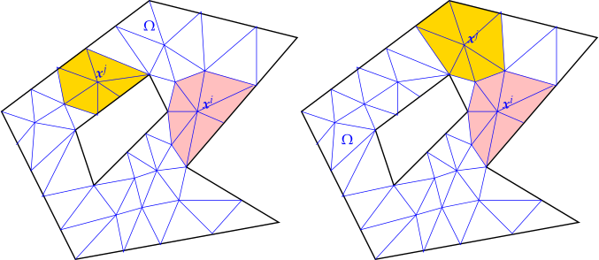
Example 1 : Tent Function 1D
tent function : bhj(x)=⎩⎨⎧(x−xj−1)/hj(xj+1−x)/hj+10xj−1≤x≤xjxj≤x≤xj+1otherwise
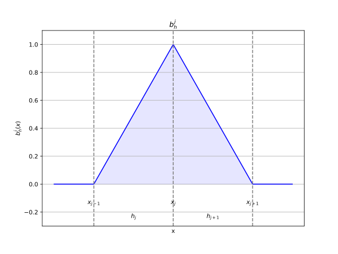
Example 2 : Triangle Barycentric cooridnate
tent function : $b_h^i(x_j) = \begin{cases}1&i=j\0&\text{else} \end{cases} \quad $
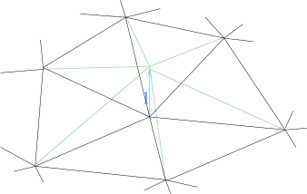
barycentric coordinate function : λi=αi+βi⋅xα∈R,β∈R3

aij : the ith component of the jth point in the triangle element
How to get α and β ?
- solve the linear system
111a11a12a13a21a22a23α1β11β21α2β12β22α3β13β23=I3
- compute directly
λ1=2∣K∣1(x−aK2)[a22−a23a13−a12]λ2=2∣K∣1(x−aK3)[a23−a21a11−a13]λ3=2∣K∣1(x−aK1)[a21−a22a12−a11]
Quadrature
∫abψ(t)dt≈j=1∑mωjmψ(ζjm)
Notation
- ωjm : quadrature weights
- ζjm : quadrature nodes
Example : Triangle quadrature
K=convex{[00],[10],[01]} : triangle element
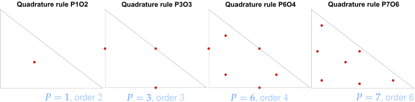
- P1O2 : ω={1}， ζ={[3131]}
- P3O3 : ω={31,31,31}, ζ={[210],[021],[2121]}
Stiffness Matrix
[AK]ij=a(bhi,bhj)
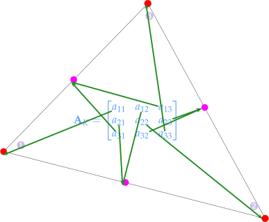
Example : Triangle Element Stiffness Matrix
a(λi,λj)=∫∇λj(x)⋅∇λi(x) dx⇒AK=∣K∣[β11β21β12β22β13β23]⊤[β11β21β12β22β13β23]
1
2
3
4
5
6
7
8
9
10
11
12
13
14
15
16
| Eigen::Matrix<double, 2, 3> gradbarycoordinates(const TriGeo_t& vertices){
Eigen::Matrix<double, 3, 3> X;
X.block<3,1>(0,0) = Eigen::Vector3d::Ones();
X.block<3,2>(0,1) = vertices.transpose();
return X.inverse().block<2,3>(1,0);
}
Eigen::Matrix3d ElementMatrix_Lapl_LFE(const TriGeo_t& V){
double area = 0.5 * std::abs((V(0,1) - V(0,0)) * (V(1,2) - V(1,1)) -
(V(0,2) - V(0,1)) * （V(1,1) - V(1,0)));
Eigen::Matrix<double, 2, 3> X = gradbarycoordinates(V);
return area * X.transpose() * X;
}
|
Load Vector
[ϕ]j=ℓ(bhj)
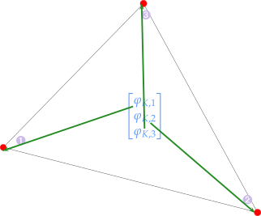
Example : Triangle Element Load Vector
ℓ(bhj)=∫f(bhj(x)) dx⇒ϕK=3∣K∣[f(a1)f(a2)f(a3)]⊤
1
2
3
4
5
6
7
8
9
10
11
| typedef function<double(const Eigen::Vector2d &)> FHandle_t;
Eigen::Vector3d localLoadLFE(const t_TriGeo&V, const FHandle_t& FHandle){
double area = 0.5 * std::abs((V(0,1) - V(0,0)) * (V(1,2) - V(1,1)) -
(V(0,2) - V(0,1)) * （V(1,1) - V(1,0)));
Eigen::Vector3d philoc = Eigen::Vector3d::Zero();
for(int i = 0; i < 3; i ++) philoc(i) = FHandle(V.row(i));
philoc *= area / 3.0;
return philoc;
}
|
Assemble
AK→AM∀K∈M
construct the global stiffness matrix/load vector using element stiffness matrix/load vector
Stiffness Matrix
Aij=a(bh∣K1j,bh∣K1i)+a(bh∣K2j,bh∣K2i)∀i=j
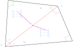
Aii=Kj,i∈Kj∑a(bh∣Kji,bh∣Kji)
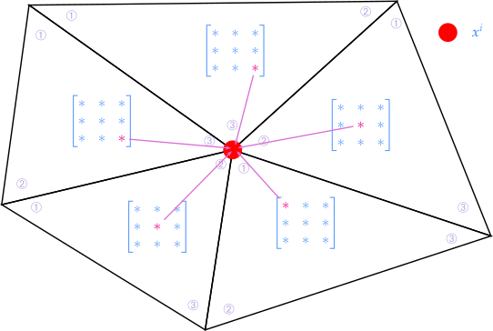
Example : code for stiffness matrix assemble
1
2
3
4
5
6
7
8
9
10
11
12
13
14
15
16
17
| Eigen::SparseMatrix<double> assembleGalMatLFE(const TriaMesh2D& Mesh,
const LocalMatrixHandle_t getElementMatrix){
int N = Mesh._nodecoords.rows();
int M = Mesh._elments.rows();
Eigen::SparseMatrix<double> A(N,N);
for(int i = 0; i < M; i++){
Eigen::Vector3i dofhk = Mesh._elements.row(i);
TriGeo_t V;
for(int j = 0; j < 3; j++)V.col(j) = Mesh._nodecoords.row(dofhk(j)).transpose();
Eigen::Matrix3d Ak = getElementMatrix(V);
for(int j = 0; j < 3; j++)
for(int k = 0; k < 3; k++)
A.coeffRef(dofhk(j), dofhk(k)) += Ak(j, k);
}
A.makeCompresssed();
return A;
}
|
**LehrFEM++ Example **
computeGalerkinMat : ∫Ωα(x)∇u⋅∇v+γ(x) u v dx+∫∂Ωβ u v dS=∫Ωf v dx
- M=∫Ωρ u v dx
1
2
3
4
5
| auto zero_mf = lf::uscalfe::MeshFunctionGlobal([](Eigen::Vector2d)->double{return 0.0;});
auto one_mf = lf::uscalfe::MeshFunctionGlobal([](Eigen::Vector2d)->double{return 1.0});
auto rho_mf = lf::uscalfe::MeshFunctionGlobal(rho);
lf::assemble::COOMatrix<double> M_COO = computeGalerkinMat(fe_space_p, zero_mf, rho_mf, zero_mf);
Eigen::SparseMatrix<double> M = M.makeSparse();
|
ReactionDiffusionElementMatrixProvider : a(u,v)=∫Ωα(x)∇u⋅∇v+γ(x) u v dx
MassEdgeMatrixProvider : a=∫∂Ωγ(x) u v dx
Load Vector
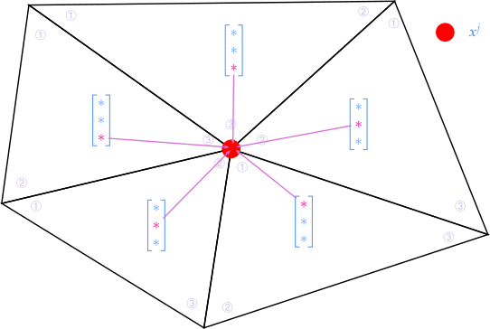
Example : code for load vector assemble
1
2
3
4
5
6
7
8
9
10
11
12
13
14
15
16
17
| typedef function<double(const Eigen::Vector2d&)> FHandle_t;
typedef function<Eigen::Vector3d(const TriGeo_t&, FHandle_t)> LocalVectorHandle_t;
Eigen::VectorXd assemLoad_FLE(const TriaMesh2D& Mesh,
const LocalVectorHandle_t& getElementVector,
const FHandler_t& FHandle){
int N = Mesh._nodecoords.rows();
int M = Mesh._elments.rows();
Eigen::VectorXd phi = Eigen::VectorXd::Zero(N);
for(int i = 0; i < M; i++){
Eigen::Vector3i dofhk = Mesh._elements.row(i);
TriGeo_t V;
for(int j = 0; j < 3; j++)V.col(j) = Mesh._nodecoords.row(dofhk(j)).transpose();
Eigen::Vector3d philoc = getElementVector(V, FHandle);
for(int j = 0; j < 3; j++) phi(dofhk(j)) += philoc(j);
}
return phi;
}
|
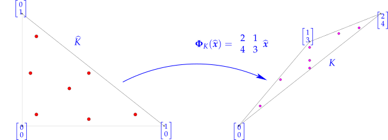
$$
K = \Phi_K(\hat K) = \textbf F_k \hat K+\tau \Rightarrow |K| =|\hat K| |\text{det} \textbf F_k|
$$
> *Notation*
>
> - $K/\hat K$ : transformed/origin element
> - $\Phi_K$ : transformation for element $K$, $(\Phi^*u)(x)=\Phi(u(\hat x))\Rightarrow (\nabla_{\hat x}(\Phi^* u))(\hat x) = (\text{D}\Phi(\hat x))^\top\underbrace{(\nabla_x u)\Phi(\hat x)}_{=\Phi^*(\nabla u)(\hat x)}$
To apply the transformation, following rules are used :
- quadrature : ωℓK=Gramian determinantdet(DΦ(ζ^ℓ)⊤DΦ(ζ^ℓ))ω^ℓζℓK=ΦK(ζ^ℓ)
- f(x)→f(Φ(ζ^))
- u(x)→b^(ζ^)
- ∇u(x)→(DΦ(ζ^))−⊤∇b^(ζ^)
Example
-
a(u,v)=∫α(x)∇u(x)⋅∇v(x) dx
[AK]ij=∑ℓ=1Pω^ℓα(Φ(ζ^ℓ))((DΦ(ζ^ℓ))−⊤∇b^i(ζ^ℓ))⋅((DΦ(ζ^ℓ))−⊤∇b^j(ζ^ℓ)) ∣det DΦ(ζ^ℓ)∣
-
ℓ(v)=∫f(x) dx
[ϕK]i=∑ℓ=1Pω^ℓf(ΦK(ζ^ℓ))b^i(ζ^ℓ) ∣det DΦK(ζ^ℓ)∣
LehrFEM++
1
2
3
4
5
6
7
| const lf::uscalfe::FeLagrangeO2Tria<double> ref_fe;
const lf::quad::QuadRule qr{lf::quad::make_TriaQR_P6O4};
const lf::geometry::Geometry *geo = cell.Geometry();
const Eigen::VectorXd dets(geo->IntegrationElement(qr.Points()));
const Eigen::VectorXd JinvT(geo->JacobianInverseGramian(qr.Points()));
const Eigen::MatrixXd val_ref_lsf = ref_fe.EvalReferenceShapeFunctions(qr.Points());
const Eigen::MatrixXd grad_ref_lsf = ref_fe.GradientsReferenceShapeFunctions(qr.Points());
|
- [ζ^1,⋯,ζ^m] :
qr.Points()
- b^j :
val_ref_lsf(j, l)
- ∇b^j(ζ^ℓ) :
grad_ref_lsf.block(j, 2*l, 1, 2).transpose()
- DΦK(ζ^ℓ)−⊤ :
JinvT.block(0, 2*l, 2, 2)
- det DΦK(ζ^ℓ) :
dets[l]
Lagrangian FEM
Sp0(M) : p-th Lagrangian finite element space, C0 continuity, p is the degree of polynomials
- Multivariate polynomials : Pp(Rd)={x∈Rd→∑α∈N0d,∣α∣≤pcαxα,cα∈R}
- example : P2(R2)=Span{1,x1,x2,x12,x22,x1,x2}
- dimension : dimPp(Rd)=(d+pp)
- Tensor product polynomials : Q(Rd)=Span{x→p1(x1)⋯pd(xd), pi∈Pp(R), i=1,…,d}
- example : Q2(R2)=Span{1,x1,x2,x1x2,x12,x12x2,x12x22,x1x22,x22}
- dimension : dimQp(Rd)=(p+1)d∀p∈N0,d∈N
Example : High order triangle element
-
Triangle P2
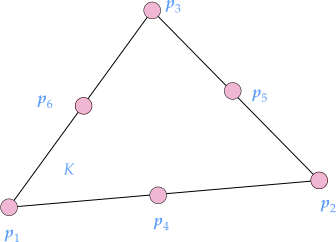
$$
\begin{matrix}
b_K^1 = (2\lambda_1 - 1)&b_K^2 = (2\lambda_2 - 1)\lambda_2 & b_K^3 = (2\lambda_3-1)\lambda_3 \\
b_K^4 = 4\lambda_1\lambda_2 & b_K^5 = 4\lambda_2\lambda_3 & b_K^6 = 4\lambda_1\lambda_3
\end{matrix}
$$
-
Triangle P3
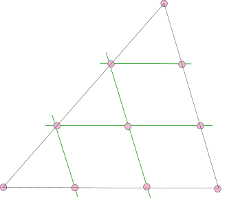
-
Triangle Pp
bKi=α∈N03,∣α∣≤p∑καλ1α1λ2α2λ3α3
Boundary
Essential boundary (condense)
u=gu∈∂Ω⇔μ∂=γ
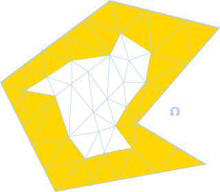
$$
\begin{bmatrix}
\textbf A_0&\textbf A_{0\partial}\\
\textbf A_{0\partial}^\top & A_{\partial\partial}
\end{bmatrix}
\begin{bmatrix}
\vec \mu_0\\\vec\gamma
\end{bmatrix}
= \begin{bmatrix}
\vec \phi\\
*
\end{bmatrix}
\Leftrightarrow A_0\vec \mu_0 = \vec\phi - A_{0\partial}\vec\gamma
$$
> **
LehrFEM++**
>
> - `FixFlaggedSolutionComponents`
> $$
> \text A=\begin{bmatrix}
> \textbf A_{00}&\textbf A_{0\partial}\\
> \textbf A_{\partial 0}&\textbf A_{\partial\partial}
> \end{bmatrix},
> \textbf b = \begin{bmatrix}
> \textbf b_{0}\\
> \textbf b_{\partial}
> \end{bmatrix}
> \\
> \textbf A\textbf x =\textbf b \Leftrightarrow
> \begin{bmatrix}
> \textbf A_{00}&0\\
> 0&\textbf I
> \end{bmatrix}
> \begin{bmatrix}
> \textbf x\\ \hat{\textbf x}
> \end{bmatrix}
> = \begin{bmatrix}
> \textbf b_0 - \textbf A_{0\partial}\hat{\textbf x}\\
> \hat{\textbf{x}}
> \end{bmatrix}
> $$
>
>
1
2
3
4
5
6
7
| lf::assemble::FixFlaggedSolutionComponents<double>(
[&](lf::assemble::gdof_idx_t idx) -> std::pair<bool,double>{
const lf::mesh::Entity &node{dofh.Entity(idx)};
return {bd_flags(node), 0.0};
}
A, phi);
|
boundary approximation
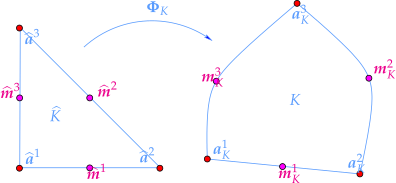
Convergence and Accuracy
Notation
hM : mesh width hM=max{diam K:K∈M} diam K=max {∣p−q∣:p,q∈K}
Types of Convergence :
- algebratic convergence : ∥u−uN∥=O(N−α)α>0
- exponential convergence : ∥u−uN∥=O(exp(−γNδ))γ,δ>0
Concept :
-
Shape Regularity : ρK=∣K∣hKdρM=K∈Mmax ρKhK=diam(K)
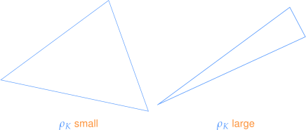
- diam(K) : the longest distance between two points in element K
- ρK/M : shape regularity for element K / mesh M
-
Variational Crime : instead of solve exact varational problem a(uh,vh)=ℓ(vh), we solve perturbed varational problem a(u~h,vh)=ℓ(vh)
Error Estimation
-
H1 norm : vh∈Sp0(M)inf∥u−vh∥H1(Ω)≤C′N−dmin{p,k−1}∥u∥Hk(Ω)C(phM)min{p+1,k}−1∥u∥Hk(Ω)
- ∥u−lpu∥H1(Ω)≤ChMmin{p+1,k}−1∥u∥Hk(Ω), lp is the p-th order interpolation
-
L2 norm : ∥u−vh∥L2(Ω)/L∞(Ω)=O(hMp+1)
- ∥u−lpu∥L2(Ω)≤ChMmin{p+1,k}∥u∥Hk(Ω)
- example : ∥u−l1u∥L2(Ω)≤83hM2∣u∣H2(Ω)
-
H1 seminorm : ∣u−vh∣H1(Ω)=O(hMp)
- example : ∣u−l1u∣H1(Ω)≤243ρMhM∣u∣H2(Ω)
Example
−∇u=fu∈H1
- linear Lagrangian p=1 S10
- ∣u−uh∣H1(Ω)=O(hM)=O(N−21)
- ∣∣u−uh∥L2(Ω)=O(hM2)=O(N−1)
- ∥u−uh∥H1(Ω)=O(N−31)
- quadratuic Lagrangian p=2 S20
- ∣u−uh∣H1(Ω)=O(hM2)=O(N−1)
- ∥u−uh∥L2=O(hM3)=O(N−23)
- ∥u−uh∥H1(Ω)=O(N−31)
Nonlinear BVP
Linearizing fixed-point iteration
Example
-
∫ΩA(x,∇u)∇u⋅∇v+c(u)uv dx=∫Ωf(x)v dx
∫ΩA(x,∇u(k))∇u(k+1)⋅∇v+c(u(k))u(k+1)(x)v(x)dx=∫Ωf(x)v dx
Newton’s method
a(u(k),v)+Dua(u(k),v)w=0Dua(u(k),v)=t→0limta(u+tw,v)−a(u,v)u(k+1)=u(k)+w
Example
-
a(u,v)=∫Ωσ(x)A(∇u)∇u⋅∇v dx
Dua(u,v)w=t→0limt∫Ωσ(x)A(∇u+t∇w)(∇u+t∇w)⋅∇v dx−a(u,v)=t→0limt∫Ωσ(x)(A(∇u)+tDA(∇u)∇w)(∇u+t∇w)⋅∇v dx=∫ΩA(∇u)∇w⋅∇v+(DA(∇u)∇w)∇u⋅∇v dx
Time Evolution
Notation
- u˙=∂t∂u
- u¨=∂t2∂2u
Linear
Mdtdμ(t)+Aμ(t)=ϕ(t)
Notation
- M∈RN×N : mass matrix Mij=m(bhj,bhi)
- A∈RN×N : stiffness matrix Aij=a(bhj,bhi)
- ϕ∈RN : load vector ϕi(t)=ℓ(t)(bhi)
Example : heat equation
m(u˙,v)∫Ωρ(x)u˙(x) dx+a(u,v)∫Ωκ(x)∇u(t)⋅∇v dx=ℓ(t)(v)∫Ωf(x,t)v dx
Runge-Kutta
u˙=f(t,u)
Mμ˙+Aμ(t)=ϕ(t)⇒μ˙=f(t,μ)M−1(ϕ(t)−Aμ(t))
s-stage Runge-Kutta single step method
ki=f(t+ciτ,u+τj=1∑saijkj)Ψt,t+τu=u+τi=1∑sbiki
Butcher schemes
cAb⊤=c1⋮csa11⋮as1b1⋯⋱⋯⋯a1s⋮assbsc,b∈Rs,A∈Rs×s
Example
- explicit (forward) Euler : 001
- Ψt,t+τu≈u+τf(t,u)
- implicit (backward) Euler : 111
- Ψt,t+τu≈ww=u+τf(t+τ,w)
- implicit midpoint rule : 21211
- Ψt,t+τu≈ww=u+τf(t+2τ,2w+u)
Diagonalization
T⊤MT=IAT=MTDD=diag[λ1,⋯,λN]
Mdtdμ+Aμ=0⇔η˙=−Dηη=T⊤Mμ
Behavior of generalized eigenvalues
diam(Ω)21≤λmin≤Cλmax≥ChM−2
- λmin not depend on hM
- λmax propotional to hM−2
Stability
\mathcal S(z) = 1+z\textbf b^\top(\textbf I - z\mathfrak A)^{-1}\textbf 1 = \frac{\text{det}(\textbf I-z\mathfrak A+z\textbf 1\textbf b^\top)}{\text{det} (\textbf I-z\mathfrak A)}\quad z\in \C
L(π)-stability :
- ∣S(z)∣<1∀z<0
- z∈R→−∞limS(z)=0
Convergence
τj=1∑M∣u−uh∣H12≤C(hMp+τq)
- p is the degree of Lagrangian finite element
- q is the order of single step method
- τ is the timestep
Second Order
Mμ(t)¨+Aμ(t)=ϕ(t)
Example : wave equation
=m(u¨,v)∫Ωρ(x)⋅u¨(x,t) v(x) dx+a(u,v)∫Ωσ(x)∇u(x,t)⋅∇v(x) dx=0
conservation of total energy : 21m(u˙,u˙)+21a(u,u)=const
Crank-Nicolson
Mτ2μ(j+1)−2μ(j)+μ(j−1)=−41A(μ(j−1)+2μ(i)+μ(j+1))+21(ϕ(tj−2τ)+ϕ(tj+2τ))
Störmer-Verlet
Mτ2μ(j+1)−2μ(j)+μ(j−1)=−Aμ(j)+ϕ(tj)
Leapfrog
Mτν(j+21)−ν(j−21)τμ(j+1)−μ(j)=−Aμ(j)+ϕ(tj)=ν(j+21)
τj=1∑M∥u−uh∥H12τj=1∑M∥u−uh∥L22≤C(hMp+τ2)≤C(hMp+1+τ2)
stability for leapfrog timestepping entails : τ≤O(hM)
Method of Lines
discrete variables other than time, then solve the equation as ODE
Courant-Fridrichs-Lewy(CFL) condition
maximum speed of propagation : s=sup{∣f′(ζ)∣:inf u0(x)≤ζ≤sup u0(x)}
minimum timestep : τ≤sh
DoD Domain of Dependency
CFL-condition⇔analytical DoD⊂numerical DoD
Example : Störmer-Verlet timestepping
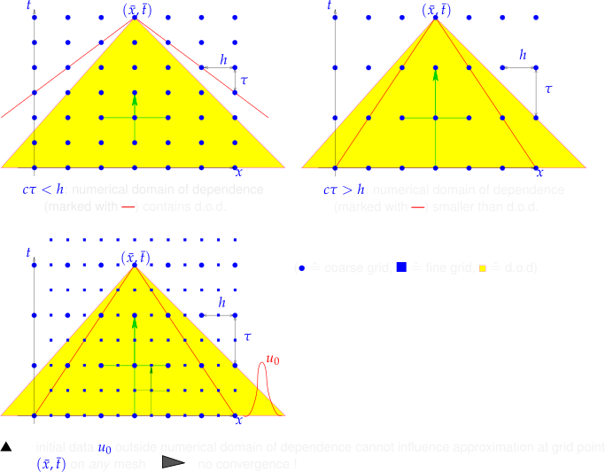
Convection Diffusion
Heat conduction in a fluid
- CDE (Convection-Diffusion Equation) : diffusive term(2nd order)−∇⋅(κ∇u(x))+convective term(1st order)∇⋅(ρv(x)u(x))=f
- Incompressible CDE : diffusive term(2nd order)−κ∇2u+convective term(1st order)ρv⋅∇u=f
- Time-Depdent(Transient) Heat Flow : ∂t∂(ρu)−κ∇2u+ρv(x,t)⋅∇u=f(x,t)
- Transport Equation : ∂t∂u+v(x,t)⋅∇u=f(x)
Notation
- u∈R : temperature
- v∈Rd : fluid velocity
Maximumm principle
−∇2u+v⋅∇u−∇2u+v⋅∇u≥0⇒x∈∂Ωmin u(x)=x∈Ωmin u(x)≤0⇒x∈∂Ωmax u(x)=x∈Ωmax u(x)
Boundary
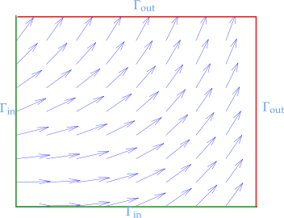
- inflow boundary : Γin={x∈∂Ω,v(x)⋅n(x)<0}
- outflow boundary : Γout={x∈∂Ω,v(x)⋅n(x)>0}
Method of Lines
discretized d−1 dimension
∂t∂u−ϵ∇2u+v(x,t)⋅∇u=f⇓Mdtdμ(t)+ϵAμ(t)+B(t)μ(t)=ϕ(t)
Notation
- μ(t)∈RN : approximation of uh
- M∈RN×N : mass matrix
- A∈RN×N : Galerkin matirx
- B(t)∈RN×N : time-dependent matrix for convection term
- ϕ(t)∈RN : load function f and boundary g
Upwind
−ϵ∇2u+v⋅∇u=f
for very small κ/ϵ spurious oscillation is observed
-
upwind quadrature ζ→δ→0lim ζ−δv(ζ)
- convergence : ∥u−uh∥L2=O(hM)
-
streamline-diffusion method : ϵ→ϵI+δKvKvK⊤
-
consistency (SUPG stremaline upwind/petrov galerkin method) :
∫Ω∇u⋅∇w+(v(x)⋅∇u)w dx+stabilization termK∈M∑δK∫K(−ϵ∇2u+v⋅∇u−f)⋅(v⋅∇w)dx=∫Ωfwdx
-
convergence : ∥u−uh∥L2=O(hM2)
other methods :
-
forward differential : ∣ϵh−1∣≥1
dxdu∣x=xi=hui+1−ui
-
backward differential : ϵ≥0,h>0
dxdu∣x=xi=hui−ui−1
Split-Step method
Strang Splitting
y˙=g(t,y)+r(t,y)
- y~=z(tj−1,21τ)z˙=g(t,z)z(tj−1)=y(j−1)
- y^=w(tj)w˙=r(t,w)w(tj−1)=y~
- y(j)=z(tj)z˙=g(t,z)z(tj−1+21τ)=y^
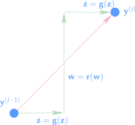
accuracy order: second order
Leap-frog : combine 1 and 3
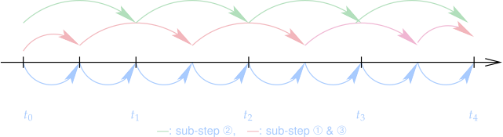
Conservation
Characteristics
characteristic curve : Γ:=(γ(τ),τ), usually x=γ(τ)
dτdγ(τ)=f′(u(γ(τ),γ))
Reimann problem
u0={ul∈Rur∈Rx<0x>0
shock solution
u(x,t)={ulurx<s˙tx>s˙ts˙=ul−urf(ul)−f(ur)
rarefaction sollution
f∈C2(R) is strictly {convex and ul<urconcave and ur<ul
u(x,t)g=⎩⎨⎧ulg(tx)urx<min{f′(ul),f′(ur)}⋅tmin{f′(ul),f′(ur)}<tx<max{f′(ul),f′(ur)}x>max{f′(ul),f′(ur)}⋅t=(f′)−1
Numerical Flux
- Center Flux : F1(v,w)=21(f(v)+f(w))F2(v,w)=f(21(v+w))
- La_Friedrichs/Rusanov Flus : F(v,w)=21(f(v)+f(w))−21(w−v)
- Upwind Flux : F(w,v)={f(v)f(w)s˙≥0s˙<0s˙={w−vf(w)−f(v)f′(v)v=wv=w
- Godunov Flux : u^{\downarrow} = \begin{cases}
w & \begin{cases} &v = w\\ &v > w\and \dot s < 0\\ &v < w \and f'(w) < 0\end{cases}
&\begin{aligned}
&\text{constant solution}\\
&\text{subsonic shock}\\
&\text{subsonic rarefaction}
\end{aligned}
\\
v & \begin{cases}
&v > w \and \dot s > 0 \\
&v < w \and f'(v) > 0
\end{cases}
&\begin{aligned}
&\text{supersonic shock}\\
&\text{supersonic rarefaction}\\
\end{aligned}
\\
(f')^{-1}(0) & v < w \and f'(v) \le 0\le f'(w) & \text{transonic rarefaction}
\end{cases}\quad F(v,w)=f(u^\downarrow(v,w))
LerhFEM++
double result;
if (v >= w) result = std::max(f(v), f(w));
else if(f.derivative(v) > 0.0) result = f(v);
else if(f.derivative(w) < 0.0) result = f(w);
else{
auto df = [this](double x){return f.derivative;};
double z = findRoots(v, w, df);
result = f(z);
}